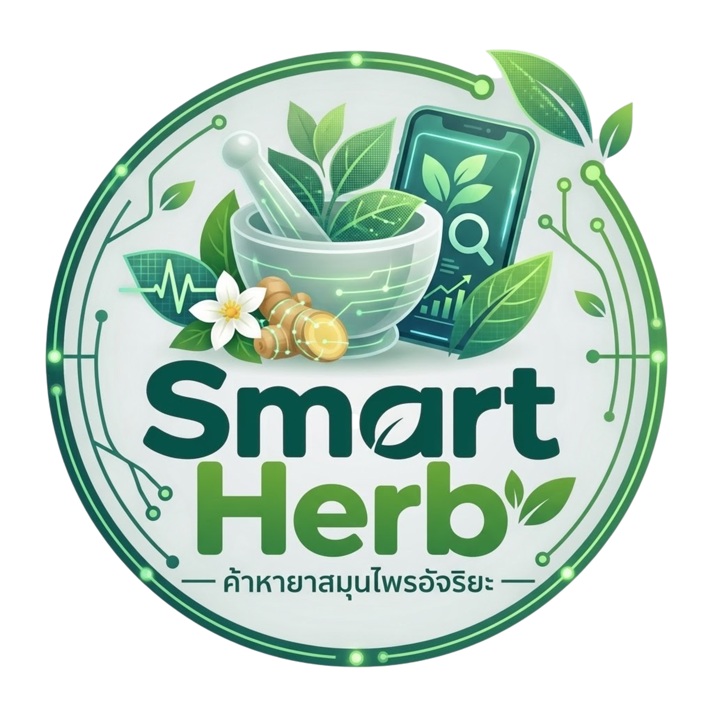

เปิดค้นหาได้รวดเร็วทันใจ ใช้งานได้แม้ไม่มีสัญญาณอินเทอร์เน็ต
เพิ่มระบบสืบค้นยาสมุนไพรลงบนหน้าจอหลัก (Home Screen)
เปิดเว็บด้วย Chrome (Android) หรือ Safari (iOS)
กด ⋮ (Chrome) หรือปุ่มแชร์ (Safari)
เลือก "เพิ่มลงในหน้าจอหลัก" (Add to Home Screen)
กด "เพิ่ม" เพื่อยืนยัน